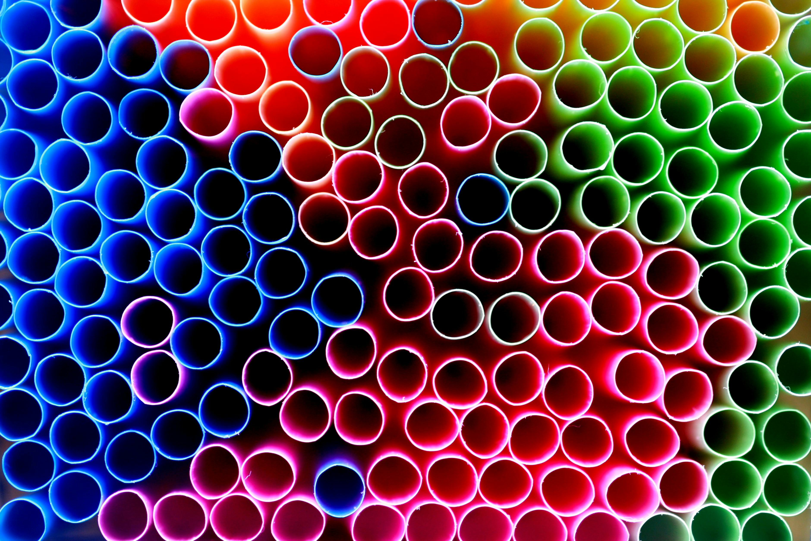
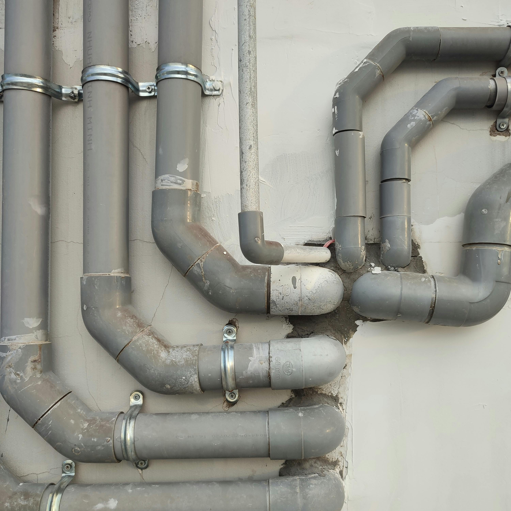
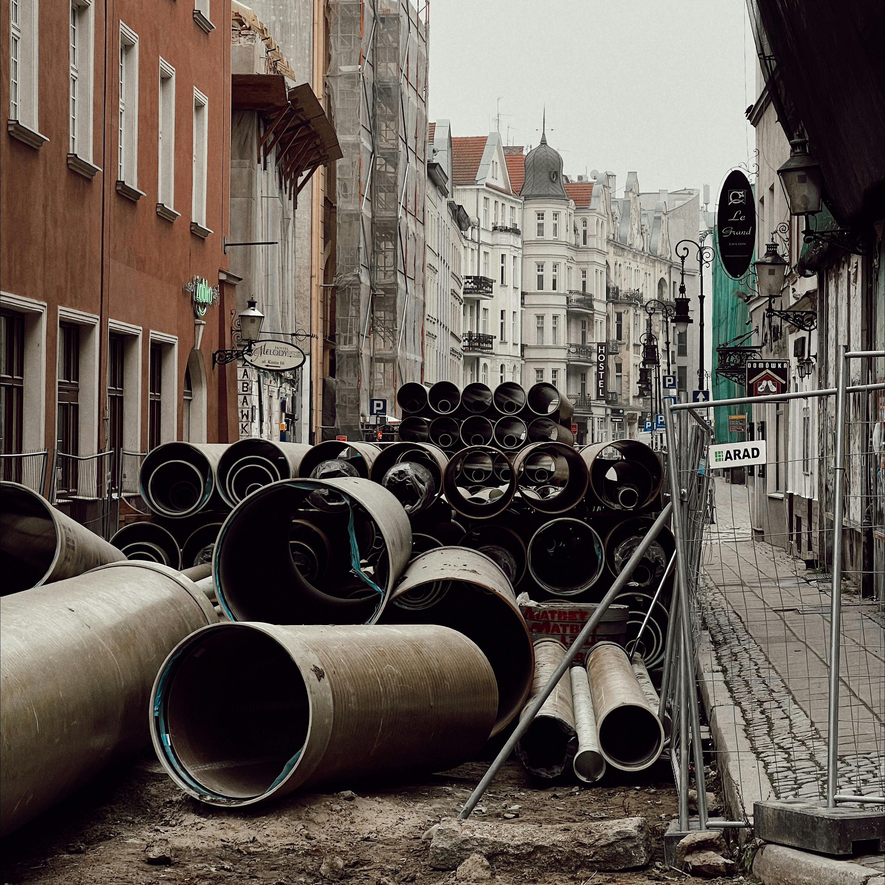
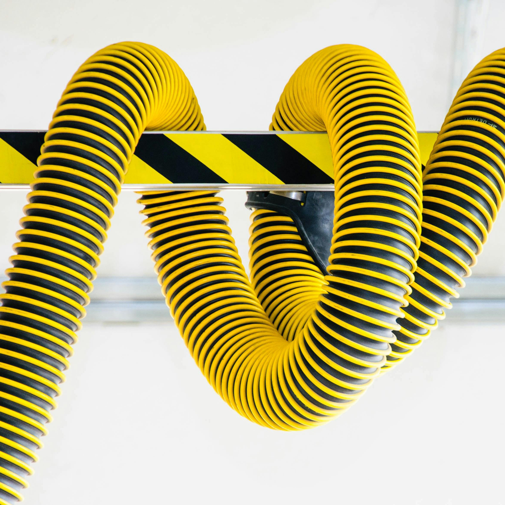

The Internet is a series of tubes, and we are here to expand, service, and clean those tubes.

What we do
Our patented three-point cleaning process declogs excess information and hastens email delivery.

We link tubes together in tube hubs to establish Local Tube Networks.

We specialize in tube installation in historic neighborhoods, turning Internet deserts into 1,200 gallon-per-minute Internet oases.

Our licensed tube-nicians are W3 certified to repair and replace hazardous tubes.
I just the other day got, an internet was sent by my staff at 10 o'clock in the morning on Friday and I just got it yesterday. Why? Because it got tangled up with all these things going on the internet commercially. They want to deliver vast amounts of information over the Internet. And again, the Internet is not something you just dump something on. It's not a big truck. It's a series of tubes. And if you don't understand those tubes can be filled and if they are filled, when you put your message in, it gets in line and it's going to be delayed by anyone that puts into that tube enormous amounts of material, enormous amounts of material.
-Ted Stevens, Senator from Alaska
What are you waiting for!?
Sign up for a free and totally tubular consultation!